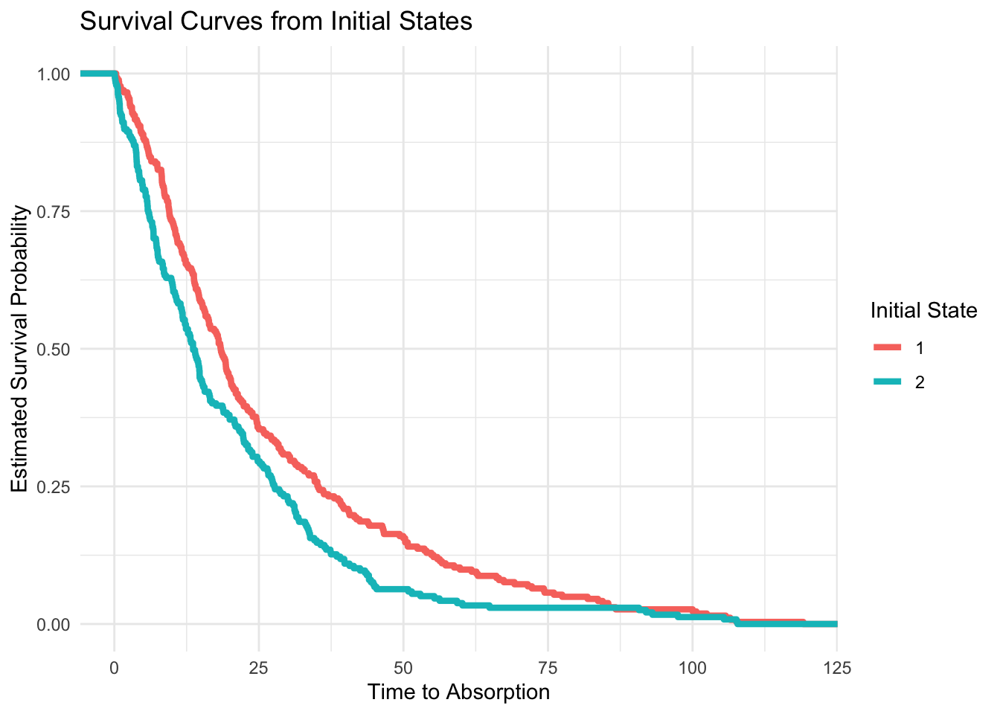

Show the code
library(expm) # for matrix exponential
library(ggplot2)
library(dplyr)
library(tidyr)
library(ggpubr) # For ggtexttablelibrary(expm) # for matrix exponential
library(ggplot2)
library(dplyr)
library(tidyr)
library(ggpubr) # For ggtexttable# States: 1 = Mild Disease, 2 = Progression, 3 = Death (absorbing)
Q <- matrix(c(
-0.1, 0.07, 0.03, # Mild Disease → Progression & Death
0.05, -0.1, 0.05, # Progression → Mild Disease & Death
0.00, 0.00, 0.00 # Death is absorbing
), nrow = 3, byrow = TRUE)
rownames(Q) <- colnames(Q) <- c("Mild", "Prog", "Death")
# Check: Each row should sum to zero
row_sums <- round(rowSums(Q), 6)
stopifnot(all(row_sums == 0))
Q Mild Prog Death
Mild -0.10 0.07 0.03
Prog 0.05 -0.10 0.05
Death 0.00 0.00 0.00# This function simulates from the 'jump chain' built from the Q matrix.
simulate_ctmc <- function(Q, start_state = 1, max_time = 100) {
time <- 0
current_state <- start_state
transitions <- data.frame()
while (current_state != 3 && time < max_time) {
rate <- -Q[current_state, current_state]
if (rate == 0) break # absorbing or misconfigured
wait <- rexp(1, rate)
time <- time + wait
probs <- Q[current_state, ]
probs[current_state] <- 0
probs <- probs / sum(probs)
next_state <- sample(1:3, size = 1, prob = probs)
transitions <- rbind(transitions, data.frame(
time = time,
from_state = current_state,
to_state = next_state
))
current_state <- next_state
}
return(transitions)
}#|
# This function includes explicit, exponential clock for states 1 and 2
simulate_ctmc <- function(Q, start_state = 1, max_time = 100) {
time <- 0
current_state <- start_state
transitions <- data.frame()
while (current_state != 3 && time < max_time) {
rates <- Q[current_state, ]
rates[current_state] <- 0 # remove self-transition
if (sum(rates) == 0) break # absorbing or stuck
# Simulate exponential clocks for each outgoing transition
wait_times <- sapply(rates, function(rate) {
if (rate > 0) rexp(1, rate) else Inf
})
next_wait <- min(wait_times)
next_state <- which.min(wait_times)
time <- time + next_wait
transitions <- rbind(transitions, data.frame(
time = time,
from_state = current_state,
to_state = next_state
))
current_state <- next_state
}
return(transitions)
}# Simulate for many patients
set.seed(123)
n_patients <- 500
# Simulate data
sim_data <- do.call(rbind, lapply(1:n_patients, function(i) {
start_state <- sample(1:2, 1) # Avoid absorbing state as entry
simulate_ctmc(Q, start_state = start_state) |>
mutate(patient = i)
}))
# 1:n_patients - Loops over all patients in the simulation
# sample(1:2, 1) - Randomly selects an initial state (either 1 or 2), explicitly avoiding state 3 which is absorbing
# simulate_ctmc(Q, start_state) - Simulates that patient's trajectory through the CTMC using the transition rate matrix Q
# mutate(patient = i) - Adds a column to the data frame indicating which patient the trajectory belongs to
# lapply(..., function(i) {...}) - Builds a list of individual patient trajectories
# do.call(rbind, ...) - Concatenates all patient trajectories into one data frame (im_data)
# Filter non-absorbing events
clean_data <- sim_data |> filter(!is.na(time) & is.finite(time))patient_trajectories <- lapply(1:n_patients, function(i) {
start_state <- sample(1:2, 1) # Avoid absorbing state as entry
simulate_ctmc(Q, start_state = start_state) |>
mutate(patient = i)
})
head(patient_trajectories)[[1]]
time from_state to_state patient
1 4.578051 1 2 1
2 7.995966 2 1 1
3 19.350178 1 2 1
4 20.722539 2 1 1
5 29.929234 1 2 1
6 33.179878 2 1 1
7 36.526035 1 2 1
8 58.098226 2 1 1
9 59.364455 1 3 1
[[2]]
time from_state to_state patient
1 18.16986 2 3 2
[[3]]
time from_state to_state patient
1 24.111 1 3 3
[[4]]
time from_state to_state patient
1 2.368029 2 1 4
2 5.656458 1 3 4
[[5]]
time from_state to_state patient
1 0.5760605 2 3 5
[[6]]
time from_state to_state patient
1 0.2305322 1 2 6
2 10.6469948 2 1 6
3 15.7901299 1 3 6# Extract initial entry per patient
initial_state <- sim_data |>
group_by(patient) |>
slice_min(time) |>
select(patient, start_state = from_state)
# Get entry to absorption duration
# Join initial state and get final time for each patient
survival_data <- sim_data |>
group_by(patient) |>
summarise(survival_time = max(time)) |>
left_join(initial_state, by = "patient")
# Plot survival curves by initial state
ggplot(survival_data, aes(x = survival_time, color = factor(start_state))) +
stat_ecdf(aes(y = after_stat(1 - y)), size = 1) +
labs(
title = "Survival Curves from Initial States",
x = "Time to Absorption",
y = "Estimated Survival Probability",
color = "Initial State"
) +
theme_minimal()Warning: Using `size` aesthetic for lines was deprecated in ggplot2 3.4.0.
ℹ Please use `linewidth` instead.
# Aggregate number of transitions between states
state_counts <- sim_data |>
count(from_state, to_state, name = "n_transitions") |>
arrange(from_state, to_state)
state_table <- state_counts |>
pivot_wider(
names_from = to_state,
values_from = n_transitions,
values_fill = 0
) |> rename("state" = "from_state") |>
relocate("state", "1", "2", "3")
state_table# A tibble: 2 × 4
state `1` `2` `3`
<int> <int> <int> <int>
1 1 0 384 169
2 2 293 0 327Time in states 1 and 2
# Step 1: Sort and compute time between observations
state_durations <- sim_data |>
arrange(patient, time) |>
group_by(patient) |>
mutate(
duration = lead(time) - time,
current_state = to_state
) |>
filter(!is.na(duration)) |>
ungroup()
# Step 2: Summarise total time spent in each state across all patients
time_per_state <- state_durations |>
group_by(current_state) |>
summarise(
Mean = round(mean(duration), 2),
Q25 = round(quantile(duration, 0.25), 2),
Median = round(quantile(duration, 0.5), 2),
Q75 = round(quantile(duration, 0.75), 2),
N = n(),
.groups = "drop"
)
time_per_state# A tibble: 2 × 6
current_state Mean Q25 Median Q75 N
<int> <dbl> <dbl> <dbl> <dbl> <int>
1 1 9.84 3.14 6.96 13.6 290
2 2 9.43 2.84 6.4 13.1 383First hitting time by state
first_hits <- sim_data |>
group_by(patient, to_state) |>
summarise(first_hit = min(time), .groups = "drop") |>
group_by(to_state) |>
summarise(
Mean = round(mean(first_hit), 2),
Q25 = round(quantile(first_hit, 0.25), 2),
Median = round(quantile(first_hit, 0.5), 2),
Q75 = round(quantile(first_hit, 0.75), 2),
N = n(),
.groups = "drop"
)
first_hits# A tibble: 3 × 6
to_state Mean Q25 Median Q75 N
<int> <dbl> <dbl> <dbl> <dbl> <int>
1 1 13.4 4.2 9.7 19.7 199
2 2 12.0 3.2 7.84 16.7 244
3 3 22.4 7.53 15.6 31.1 496Time to Absorption by state
# Step 1: Assign each patient their start_state (only 1 or 2)
initial_state <- sim_data |>
group_by(patient) |>
slice_min(order_by = time, with_ties = FALSE) |>
select(patient, start_state = from_state) |>
filter(start_state %in% c(1, 2))
absorbing_states <- c(3)
# Step 2: Compute absorption time if patient reached absorbing state
absorption_times <- sim_data |>
filter(to_state %in% absorbing_states) |>
group_by(patient) |>
summarise(absorb_time = min(time), .groups = "drop")
# Step 3: Merge with initial_state to build full patient-level summary
patient_summary <- initial_state |>
left_join(absorption_times, by = "patient") |>
mutate(status = ifelse(is.na(absorb_time), "censored", "absorbed"))
# Step 4: Aggregate per start_state
absorption_summary <- patient_summary |>
group_by(start_state) |>
summarise(
mean_time = round(mean(absorb_time[status == "absorbed"], na.rm = TRUE),2),
q25 = round(quantile(absorb_time[status == "absorbed"], 0.25, na.rm = TRUE),2),
q75 = round(quantile(absorb_time[status == "absorbed"], 0.75, na.rm = TRUE),2),
censored_count = sum(status == "censored"),
.groups = "drop"
)
absorption_summary # A tibble: 2 × 5
start_state mean_time q25 q75 censored_count
<int> <dbl> <dbl> <dbl> <int>
1 1 25.9 9.49 35.1 1
2 2 18.5 5.8 27.3 3#library(ggpubr)
# Create each table without title argument
tbl1 <- ggtexttable(time_per_state, theme = ttheme("light"), rows = NULL)
tbl2 <- ggtexttable(first_hits, theme = ttheme("light"), rows = NULL)
tbl3 <- ggtexttable(absorption_summary, theme = ttheme("light"), rows = NULL)
# Arrange tables with titles using ggarrange
ggarrange(tbl1, tbl2, tbl3,
labels = c("‚è≥ Time in States 1 & 2", "üö™ First Hitting Times", "‚ö∞Ô∏è Time to Absorption"),
font.label = list(size = 12, face = "bold"),
ncol = 1, nrow = 3)